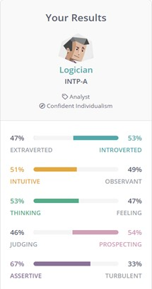
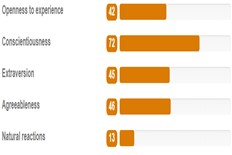

Martin LeeePortfolio |
|
|---|
| Personal Information |
My name is Martin Lee, I am an Australian born Chinese. I am bilingual, speaking Cantonese as well as English. Prior to studying this course, I have studied and obtained a Diploma of Remedial Massage, where I worked as a massage therapist for a physiotherapist for 2 years. I may not look it, but I enjoy training, especially strength training and powerlifting. Being able to lift heavy weights gives me a sense of satisfaction and achievement compared to those who seek a better physique and battle body dysmorphia. |
|---|---|
| Interest in IT |
My curiosity in IT began at a very young age. It started with computers and how they were used in the early years to convey/store information and play video games. I built my first computer around the age of 12 (back in 2007) with the help of a family friend. This sparked my interest greatly as I was intrigued in the different intricate parts that go in together to make a PC run. Over the years my enthusiasm grew with the technology. It is always exciting seeing what parts I could replace with something that has advanced over the years, giving better specs and performance. My knowledge lies within hardware, tweaking and specs, but with how IT is so everchanging I have always wanted to branch out and learn about software and mobile development. It has always fascinated me on how they were made and what is required to make them run and work smoothly. I chose to study at RMIT after researching and looking at which universities offered me the best education and resources for the course, as well as the flexibility to study the course while I worked on the side. RMIT quickly climbed to the top of this list as not only was the course I was interested in was offered, but it is also one of the best rated universities in Australia in terms of Bachelor of Information Technology, with a vast number of positive reviews of the course. I hope by the end of this course I will have learnt the basic skills needed to step into the various pathways offered by IT. Hopefully these being either software development or even cyber security, but I wouldn’t be surprised if other aspects of IT jump out at me during the duration of this course.
|
| Ideal Job |
My ideal role based on current interests is to become a systems analyst. I want to work in an environment that is engaging and challenging, that requires me to always be thinking and on my feet. I believe becoming a systems analyst is one of those ideal jobs out there for me. A systems analyst is responsible for managing and improving computer systems for the company and their clients. Their duties include, and are not limited to maintaining and upgrading systems, troubleshooting, designing frameworks, collaborating with business analysts and other IT teams, and more. The skills and experience required for this role that the employer has listed include a tertiary qualification in an IT related discipline or industry experience, minimum of 3 years experience with Microsoft and windows related products, experience with SQL server and database design, Excel/VBA, C# and ASP.NET experience. Out of all these skills listed, I can honestly say I have little to none, with only some experience in Microsoft/windows products and excel. Nothing in depth, just the basics. I plan on acquiring these skills through studying the Bachelor’s of IT that I am currently enrolled in at RMIT and looking for entry level jobs that will give me an insight and basic skills needed to work in the IT industry. Over the duration of study, I intend to take up any opportunity, given I have the time on hand, to acquire certifications for things such as Microsoft azure, AWS and other Microsoft products. Whilst also studying, I intend to find myself an entry level help desk job or something similar, which will give me the experience in systems used by individual company’s and the years of experience to apply for such job advertisements. |
| Personal Profile |
Myer's-Briggs test results: As shown on the right I am classified as a Logician. I believe most the classification and majority of the strengths in this result are quite spot on. I do believe myself to be analytical and an abstract thinker, open minded, object, honest and straightforward. In terms of weaknesses, I disagree with a few as it claims I am private and withdrawn, insensitive and condescending which I am not. By being partially introverted, it may take me some time to warm up and get the ball going in terms of working in a team, but once I start to warm up, I feel more comfortable and open to collaborating. When forming a team with this knowledge, I would, for the most part, try and find people who complement my results and counteract the potential weaknesses because of the Myer’s-Briggs test. Learning style test results:Here I used a learning test from Education Planner, where my result was me being a visual learner. This is very true as I am a visual learner and like to see how things are done first theoretically and practically before attempting it myself. This is very true for IT especially learning things such as coding. I prefer seeing how the code can be written/inputted then run before I attempt to try it for myself to get it working. Taking this into account when in a team environment, I believe it may slow the process of getting work done as I do like visual representation when certain things are being shown to me. This means I would like to search for team-members who have the patience to go through steps visually. Big Five Personality test results:For the Big Five personality test, I used 123test and my results are displayed in the image as shown. I am ranked middle ranged for 3/5 then high and low for 2/5. This is all good and agreeable on as high range in conscientiousness I value work ethic and low for natural reactions describing that I can keep my emotions in check. Through these results I have been given insight when looking for potential members to work in a team with, I believe I will have little to no conflict with people unless poor work ethic is show. This is where I would have major clashes as I highly value people with good work ethic, which earns my respect in turn. |
| Project Idea |
OverviewIT offers many ways to learn what you are passionate about. I have always wanted to learn how to code and get things running smoothly. I believe developing my own or working on a mobile app will expose me to the skills and experience needed to learn how to code properly and efficiently. My project idea here is to develop a mobile app for dog walkers. This would be a platform for those who have time to walk dogs to advertise themselves out there to make some extra money, and for those who do not have time to walk their own dogs to use to help their companion get their daily walks in. MotiivationForty percent of Australian households have at least one dog (largely unchanged since 2016, at 38%) (Pets in Australia: A national survey of pets and people, 2019). This statistic shows that almost every second household has a dog that needs to be walked. The average amount of hours worked by someone employed full time is 37.5 hours a week. But this does not account for hours lost to working overtime and time taken to travel to and from work. This means majority of full-time workers could possibly spend 10+ hours a day working. For this very reason I believe a dog walking app would be a great market for those who are available to walk someone else’s dog, who is just too busy and overwhelmed by everyday life. DescriptionHow this app will work for all users is as follows: • The app will allow dog walkers to build their profile and include location services for dog owners to locate walkers in their area/who are close by. • For dog owners to build their profiles, this involves a picture of themselves, name, age, sex, location, areas they will service (within a specified radius), etc. • Dog walkers include their rates, experience with animals and a brief description of themselves. • Dog walkers will then be able to advertise themselves out in the area/radius they have chosen and state the size of dogs they walk and how many at a time. • For dog owners/users who are searching for someone to walk their dog(s), they will be able to browse potential walkers in their area, reading and reviewing their profile and prices, determining if they are the right fit for their companion. • They app will then allow you to select and book your chosen dog walker for the duration of your choice and payments will be made online. • Once the service has been complete, users of the app can leave reviews for both the customer and dog walker for future reference of other users. Tools and TechnologiesA native mobile development app will be needed for the operating system of the phone, as IOS uses objective-C or swift and android using java or kotlin. For IOS, Xcode can be used to code and design your app on apple products. Xcode is always free to use and can instantly reflect changes in the code you type. For android, android studio that is built by Google will be used. Android Studio allows you to code and design layouts for android apps and is free and easy to use. Other technology used for this app will include location services to track down potential clients and dog walkers. An online payment platform will also be included where the developers of the app get a small % of the earnings in exchange for exposure to those who are advertising their walking services. Skills RequiredThe main skill required here is knowledge of coding. This would either be knowing either two languages for IOS as stated above such as Objective-C or Swift and for Android it is either Java or Kotlin. But this does not mean it is just limited to these four. To learn these programming languages, it’s not that difficult and you can find free courses and videos online to learn how to code in your desired programming language. The software and hardware required is also easy to find as free tools are already offered in their respective app stores for beginners to download and start learning/using. OutcomeIf this outcome were to be successful. It will allow for dog owners around the Australia and potentially the world to discover people who are willing to walk their dog(s) at a reasonable price when they do not have the time themselves. This would be a game changer for dog owners because if they don’t have time during their busy schedule, they can have peace of mind that someone great out there is taking their companion for a much-needed walk/play time. |